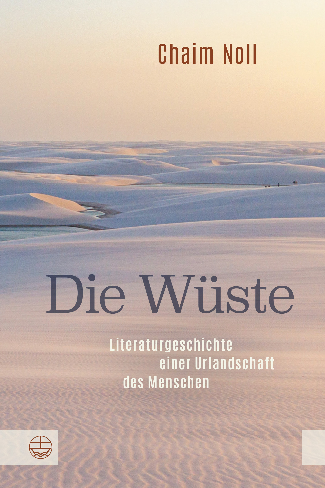
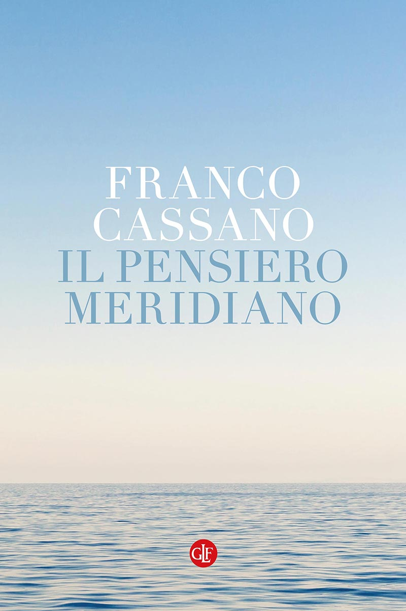

39:54 · 16 OPERE
Il deserto nella teologia biblica.
Il filo del discorso
Il contributo presenta Die Wüste di Chaim Noll come una storia del deserto nella letteratura, nella religione e nella formazione delle immagini del mondo. Il relatore ne raccomanda la lettura e auspica una traduzione italiana, soffermandosi sulla centralità del paesaggio desertico nei racconti biblici: esodo, roveto ardente, profeti e tentazioni di Gesù. Il confronto con Il pensiero meridiano di Franco Cassano suggerisce che luoghi ed esperienza vissuta possano orientare le categorie del pensiero, senza ridurre il discorso a una semplice geografia fisica. La parte centrale distingue alcuni termini ebraici tradotti in italiano con deserto e legge il cammino di Israele anche come formazione, attraverso la figura del pastore, la manna e la fiducia nel sostentamento. Nella seconda parte il deserto diventa immagine di alterità, limite del sapere e tensione fra presenza e assenza. I richiami a Giobbe, Eraclito e al sabato secondo Abraham Joshua Heschel conducono a una riflessione sul divino che non si lascia esaurire da una definizione. Le interpretazioni politiche, le generalizzazioni sulle tradizioni religiose e le etimologie proposte sono mantenute distinte dai passi testuali verificabili. Il valore del volume è presentato attraverso il giudizio del relatore, non come sostituto della lettura integrale del libro.
I libri nel discorso

Die Wüste. Literaturgeschichte einer Urlandschaft des Menschen
Copertina: Evangelische Verlagsanstalt, Leipzig, 2020, ISBN 9783374063574; il catalogo attuale dell’editore indica 688 pagine, la distribuzione segnala 2. Auflage. L’annuncio preliminare DNB prevedeva 700 pagine: non viene usato come conteggio definitivo.
Copertina autentica originale offerta dall’editore: Chaim Noll, titolo, sottotitolo, dune chiare e marchio EVA. Immagine fornita dall’editore. La seconda edizione è richiamata nel parlato e nella distribuzione, ma il singolo esemplare non è certificato audiovisivamente. La traduzione italiana è un auspicio del relatore al tempo del contributo, non una dichiarazione sulla disponibilità odierna.
Chaim Noll, Die Wüste e sottotitolo espliciti; volume discusso lungo tutto il contributo.
Passaggio 0:11 ↗ · Fonti e libro ↗
Bibbia
Copertina: San Paolo, 2014 · Nuova Versione dai Testi Antichi · edizione di riferimento
Antico e Nuovo Testamento espliciti come corpus di riferimento.
Passaggio 3:07 ↗ · Fonti e libro ↗Esodo
Volume di riferimento: San Paolo, 2014 · Nuova Versione dai Testi Antichi · edizione di riferimento
Copertina della Bibbia completa, che contiene l’Esodo. Non è la copertina di un’edizione autonoma del libro biblico; la traduzione non è attribuita al contributo.
Esodo degli ebrei, capitolo 3 con roveto ardente e racconto della manna delcapitolo 16.
Passaggio 4:21 ↗ · Fonti e libro ↗Vangelo secondo Matteo
Identificazione probabile
Copertina del volume completo: San Paolo, 2014 · Nuova Versione dai Testi Antichi · edizione di riferimento
Vangelo secondo Matteo è un libro della Bibbia. L’immagine mostra il volume completo San Paolo di riferimento, non un’edizione autonoma del singolo libro e non una versione identificata nella citazione.
Tentazioni nel deserto e uccelli del cielo; paralleli nei Sinottici, rinvio a Matteo 4 e 6 probabile per il singolo Vangelo.
Passaggio 4:31 ↗ · Fonti e libro ↗Osea
Volume completo: La Bibbia: San Paolo, 2014 · Nuova Versione dai Testi Antichi · edizione di riferimento Copertina del volume completo, non edizione autonoma del singolo libro o poema.
Copertina autentica San Paolo già presente, nuovamente vista: titolo La Bibbia, immagine angelica e marchio dell’editore. Il singolo libro o poema è distinto dal volume completo che lo contiene. Traduzione ed esemplare usati nel contributo non sono certificati.
Osea nominato con uva nel deserto (9,10); poi condurre nel deserto e parlare al cuore (2,16 CEI 2008).
Passaggio 5:24 ↗ · Fonti e libro ↗Geremia
Volume completo: La Bibbia: San Paolo, 2014 · Nuova Versione dai Testi Antichi · edizione di riferimento Copertina del volume completo, non edizione autonoma del singolo libro o poema.
Copertina autentica San Paolo già presente, nuovamente vista: titolo La Bibbia, immagine angelica e marchio dell’editore. Il singolo libro o poema è distinto dal volume completo che lo contiene. Traduzione ed esemplare usati nel contributo non sono certificati.
Geremia nominato nel richiamo al seguire il Signore nel deserto,2,2.
Passaggio 5:58 ↗ · Fonti e libro ↗Salmo 68 (67 nella numerazione greco-latina)
Volume completo: La Bibbia: San Paolo, 2014 · Nuova Versione dai Testi Antichi · edizione di riferimento Copertina del volume completo, non edizione autonoma del singolo libro o poema.
Copertina autentica San Paolo già presente, nuovamente vista: titolo La Bibbia, immagine angelica e marchio dell’editore. Il singolo libro o poema è distinto dal volume completo che lo contiene. Traduzione ed esemplare usati nel contributo non sono certificati.
Salmo 68 esplicito e riferimento all’avanzare nel deserto, vv 8–9; numerazione 67 nella tradizione greco-latina.
Passaggio 6:40 ↗ · Fonti e libro ↗Cantico di Dèbora (Giudici 5)
Volume completo: La Bibbia: San Paolo, 2014 · Nuova Versione dai Testi Antichi · edizione di riferimento Copertina del volume completo, non edizione autonoma del singolo libro o poema.
Copertina autentica San Paolo già presente, nuovamente vista: titolo La Bibbia, immagine angelica e marchio dell’editore. Il singolo libro o poema è distinto dal volume completo che lo contiene. Traduzione ed esemplare usati nel contributo non sono certificati.
Cantico di Dèbora esplicito, con Seir ed Edom, Giudici 5,4.
Passaggio 7:02 ↗ · Fonti e libro ↗
Il pensiero meridiano
Copertina: Laterza, i Robinson / Letture, edizione 2021 e ristampe successive, 180 pagine, ISBN 9788858145241. Il catalogo corrente menziona IV ristampa 2025; edizione di riferimento, non attribuita al video.
Copertina autentica dal catalogo Laterza: nome Franco Cassano, titolo azzurro, cielo e mare con marchio dell’editore. Non è un’opera di Noll e non prova una relazione deterministica fra ogni paesaggio e una filosofia nazionale.
Franco Cassano e Il pensiero meridiano espliciti nel confronto fra paesaggi e concezioni.
Passaggio 8:35 ↗ · Fonti e libro ↗
Genesi
Copertina: Einaudi, I libri della Bibbia / Einaudi Tascabili, 2000; introduzione di Steven Rose
Copertina dell’edizione autonoma Genesi, nella serie I libri della Bibbia, con introduzione di Steven Rose. Edizione scelta come riferimento iconografico; nessuna edizione è confermata nel video.
Genesi e capitolo 4 espliciti con Caino fondatore di una città; poi Eden e conoscenza del bene e del male.
Passaggio 14:15 ↗ · Fonti e libro ↗
Iliade
Copertina: Einaudi · ET Classici · 2014
Copertina autentica dell’edizione di riferimento, controllata visivamente. Non identifica l’esemplare letto o citato nel video.
Omero e Iliade espliciti per il motivo del sovrano come pastore; versi non identificati.
Passaggio 26:18 ↗ · Fonti e libro ↗Vangelo secondo Giovanni
Identificazione probabile
Copertina del volume completo: San Paolo, 2014 · Nuova Versione dai Testi Antichi · edizione di riferimento
Vangelo secondo Giovanni è un libro della Bibbia. L’immagine mostra il volume completo San Paolo di riferimento, non un’edizione autonoma del singolo libro e non una versione identificata nella citazione.
Buon pastore riconoscibile in Giovanni 10, ma il libro non è nominato: collegamento probabile.
Passaggio 25:43 ↗ · Fonti e libro ↗Isaia
Copertina del volume completo: San Paolo, 2014 · Nuova Versione dai Testi Antichi · edizione di riferimento
Isaia è un libro della Bibbia. L’immagine mostra il volume completo di riferimento San Paolo, non un’edizione autonoma di Isaia né una versione identificata nella citazione.
Isaia 35 esplicito, fioritura del deserto e terra arida.
Passaggio 27:27 ↗ · Fonti e libro ↗
Frammenti
Copertina: BUR · a cura di Francesco Fronterotta, testo greco a fronte, 2013
Immagine autentica dell’opera, controllata visivamente; l’edizione di riferimento non è attribuita al filmato.
Eraclito e ciò che attende gli esseri umani dopo la morte, compatibile con DK 22 B 27.
Passaggio 30:39 ↗ · Fonti e libro ↗Giobbe
Copertina del volume completo: San Paolo, 2014 · Nuova Versione dai Testi Antichi · edizione di riferimento
Giobbe è un libro della Bibbia. L’immagine mostra il volume completo San Paolo di riferimento, non un’edizione autonoma del singolo libro e non una versione identificata nella citazione.
Giobbe nominato con domanda sulle fondamenta della terra,38,4.
Passaggio 32:46 ↗ · Fonti e libro ↗
Il sabato. Il suo significato per l’uomo moderno (The Sabbath)
Identificazione probabile
Copertina: Immagine dell’edizione inglese The Sabbath, Farrar, Straus and Giroux, FSG Classics, 2005, introduzione di Susannah Heschel e illustrazioni di Ilya Schor. Opera originaria del 1951.
Copertina autentica FSG Classics, color ocra con decorazione nera di animali, vegetazione e caratteri ebraici; autore e titolo inglese leggibili. Non è una copertina italiana e non viene presentata come l’edizione mostrata nel video. Il collegamento al libro è probabile, a partire dalla metafora attribuita a Heschel.
Abraham Joshua Heschel e sabato come santità nel tempo: collegamento probabile a The Sabbath, titolo non pronunciato.
Passaggio 36:07 ↗ · Fonti e libro ↗